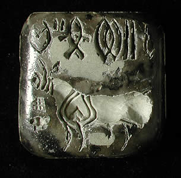

Discovery of first Indus seal
In about 1872 a small stone seal was found at Harappa. The owner of the seal showed it to Sir Alexander Cunningham who was the Director General of the Archaeological Survey of India at the time. Cunningham identified this seal as being from an unknown ancient Indian Civilization. He also recognised that the inscription at the top of the seal represented an unknown script. |